Help for “Geosurface simulation” and “Geosurface deformation” modules for "simSurf"
The new 0.0.1 simSurf modules for georeferenced geological surface processing are here described.
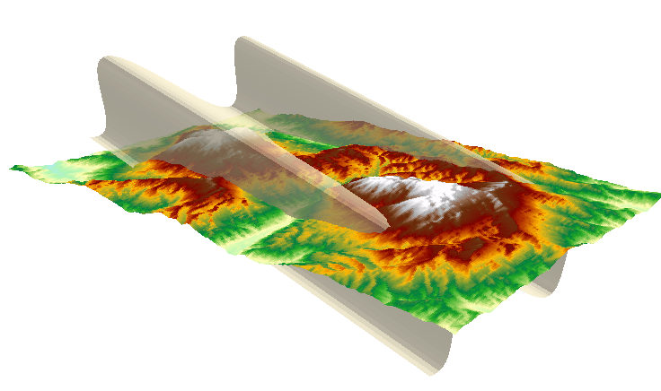
Fig. 1. Example of a sheared and rotated sinusoidal surface with geographic parameters matching those of the Mt. Alpi-Mt. Raparo Aster DEM (Lucania, Southern Italy). The view is from NE to SW. Mt. Raparo is at the right. 3D visualization created with ArcScene (ESRI).
How to simulate geological surfaces?
The simulation is divided into two consecutive steps: a) analytical formula definition; b) geographical parameters definition.
After these phases, it is possible to visualize it and save in a few text formats.
Analytical formula definition
Using analytical formulas it is possible to replicate, in a GIS environment, georeferenced theoretical surfaces that can simulate geological surfaces, such as sheared fold trains.
Truly 3D surfaces can have more than one z value for the same x-y point. In the module, this 3D nature can be achieved by the initial creation of a 2.5 surface, i.e., with no more than one z value for x-y point, and then by its deformation via methods such as vertical shear (example in Fig. 1).
2.5 D surfaces can be created as analytical functions of a and b coordinates: z = f( a, b ), defined in the “Geosurface simulation” module (Fig. 2).
The a variable represents values in the x-axis orientation (left-to-right vector), while b represent values in the y orientation (bottom-to-top vector). Ranges for a and b values are defined, as well as the number of grid columns and rows, to be used for the generation of the surface (Fig. 2).
Since a and b are stored as Numpy array values, the functions used in the “Formula” section should comply with the Numpy syntax in order to use its functions. Otherwise, the calculations will be unsuccessful.
A few examples of formulas are:
sin( a * a + b * b )
a * b + 1000
cos( a ) * 200
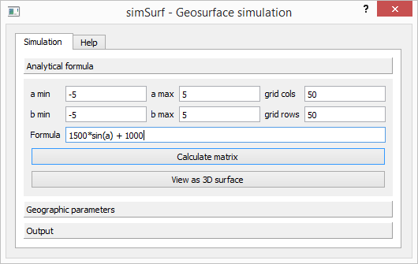
Fig. 2. Screenshot of the 'Geosurface simulation' with the analytical parameters used to create the surface displayed in Fig. 5.
Geographical parameters definition
After that the analytical surface is defined and created, it can be georeferenced by using the commands in the 'Geographic parameters' widget. The following parameters have to be defined (Figs. 3 and 4):
the height and width of the georeferenced surface to be created
its rotation angle with respect to the x-axis
the x and y values of the lower-left corner surface ('x min' and 'y min')
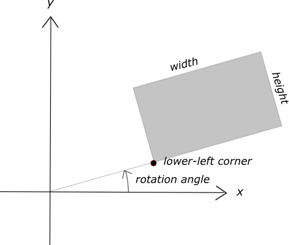
Fig. 3. Geometrical concepts for surface georeferencing.
We define the geographical ones, by filling in the values required in the “Geographic parameters” tab, with values matching the target geographical extent (example in Fig. 4).
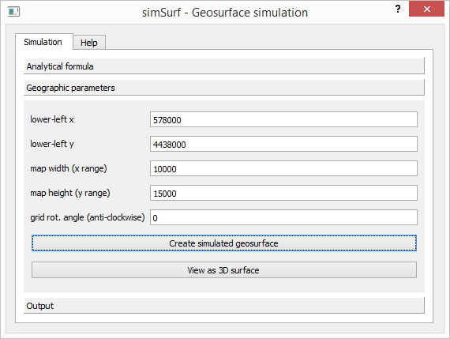
Fig. 4. Screenshot of the 'Geosurface simulation' with the geographical parameters used to create the surface displayed in Fig. 5.
Geosurface display and export
Having created a surface, it is possible to display it with the “View as 3D surface” command, and to save it.
From the 'Output' widget, it is possible to save the surface in different formats:
Grass
VTK
xyz
Generate format, for ESRI import and visualization
Gas (geological analytical surface): the module internal format
VTK and Grass formats are widely used formats that stores the parameters of the geometrical elements constituting a surface. In our case, they are the triangular faces defining the surfaces, expressed by the coordinates of three points.
It is also possible to export the surface in a format that can be read by ArcGIS, the generate format. For importing in ArcGIS the exported generate file, it is possible to use:
3D Analyst Tools -> Conversion -> From File -> ASCII 3D to Feature Class.
A visualization of a converted generate file exported from the simulated surface, is displayed with ArcScene in Fig. 5.
The Gas format is the internal format for surface in the qgSurf plugin. It is the one required as data input for the “Geosurface deformation” module.
It stores all the procedural parameters: analytical, geographical, as defined in the 'Analytical formula' and 'Geographic parameters', plus the deformational parameters when present (described in the following paragraph). On the other hand, it does not store geometrical information (points or faces), differently from the VTK o Grass formats.
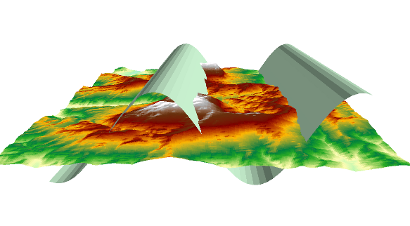
Fig. 5. The simulated surface visualized in 3D, together with the Mt.Alpi- Mt. Raparo DEM. Visualization with ArcScene.
How to deform geological surfaces?
A geological surface created with the “Geosurface simulation” module can be imported and deformed using the “Geosurface deformation” module. The input file must be in the Gas format since this is the only currently recognized input format.
Surface can be changed via displacements, rotations or strains, each one with its matrix or vector representation [1]. Apart from the displacement, all the other types are expressed as matrices that are multiplied to the initial point positions in order to obtain the final ones. More than a deformation type can be applied in sequence to the same original analytical surfaces: for instance a vertical simple shear followed by displacement and then a rotation (result in Fig. 1).
The implemented methods are (Fig. 6):
displacement
rotation
scaling
horizontal simple shear
vertical simple shear
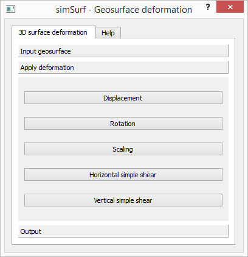
Fig. 6. The deformation method window.
With the exception of the displacement method, the applied deformations can be automatically centered on the surface center (example for the rotation method case in Fig. 7), in order to maintain the surface in the surroundings of the defined geographic boundary. However, if preferred, the user can modify the default values.
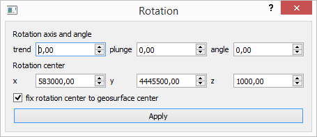
Fig. 7. The rotation method window: note the center definition options, with the default deformation centering option fixed to the surface center.
Displacement
A surface can be moved in the space, without rotation or distortion, by given offsets in the x, y and/or z directions (cf. Fig. 8).
The formula is:
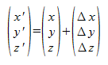
The displacement is calculated as the sum of the initial point and the shift vectors.
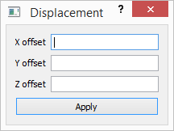
Fig. 8. The displacement window.
Rotation
The surface can be rotated by a rotation angle ω around a rotation axis, characterized by given trend (azimuth from geographic North) and plunge values (cf. Fig. 9).
The rotated position is calculated by multiplying the rotation matrix with the initial position vector (EQs. 3.11a-c in [2]).
where:
a11 = cos ω + cos2α ( 1 - cos ω )
a12 = - cos γ sin ω + cos α cos β ( 1 - cos ω )
a13 = cos β sin ω + cos α cos γ ( 1 - cos ω )
a21 = cos γ sin ω + cos α cos β ( 1 - cos ω )
a22 = cos ω + cos2 β ( 1 - cos ω )
a23 = - cos α sin ω + cos β cos γ ( 1 - cos ω )
a31 = - cos β sin ω + cos α cos γ ( 1 - cos ω )
a32 = cos α sin ω + cos β cos γ ( 1 - cos ω )
a33 = cos ω + cos2 γ ( 1 - cos ω )
and α is the angle between the rotation axis and the x axis, β is the angle between the rotation axis and the y axis, γ is the angle between the rotation axis and the z axis, and ω is the rotation angle.
The angles between the frame axes and the rotation axis are automatically derived from the rotation axis trend and plunge values.
Fig. 9. The rotation window.
Scaling
The size of the surface is scaled along the frame axes by three scale factors, Sx, Sy and Sz (cf. Fig. 10).
The transformation matrix is:
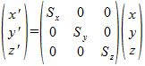
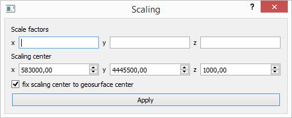
Fig. 10. The scaling window.
Horizontal simple shear
We consider a horizontal simple shear (parallel to the x-y plane) with angle ψ (psi), along a direction that makes an angle α (alpha) with the x-axis (Figs. 11 and 12).
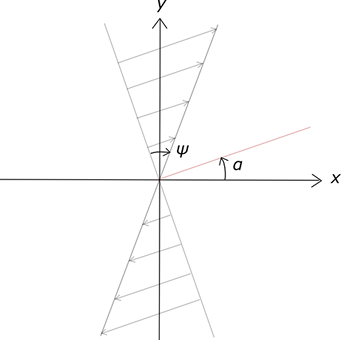
Fig. 11. Shear along the horizontal plane, defined by the x- and y- axes. Psi is the shear angle. The shear vectors make an angle of alpha with the x-axis.
Following the matrix derivation in [1], p. 290, the transformation is given by:
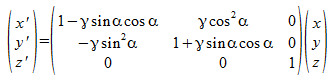
where γ is equal to tan( ψ ).
Note the negative sign in the term "-γ sin2 α": in [1], Eq. C.14 the sign is given as positive, but it appears to be inconsistent with both the derivation and the practical application of the formula.
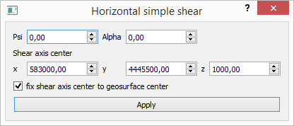
Fig. 12. The horizontal simple shear window.
Vertical simple shear
A surface can be sheared in the vertical plane, by an angle ψ (psi), along a direction making an angle α (alpha) with the x-axis (Figs. 13 and 14).
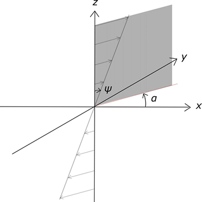
Fig. 13. Shear along a vertical axis. The shear plane is vertical, making an angle of alpha with the x-axis. Psi is the shear angle, with shear acting along horizontal vectors.
The transformation is given by:
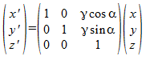
where γ is equal to tan( ψ ).
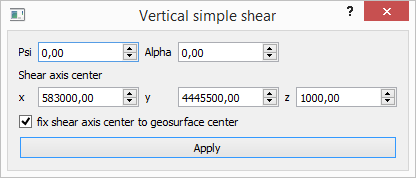
Fig. 14. The vertical simple shear window.